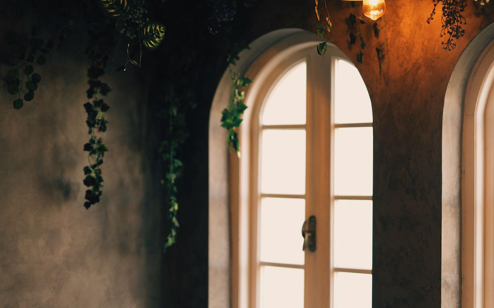
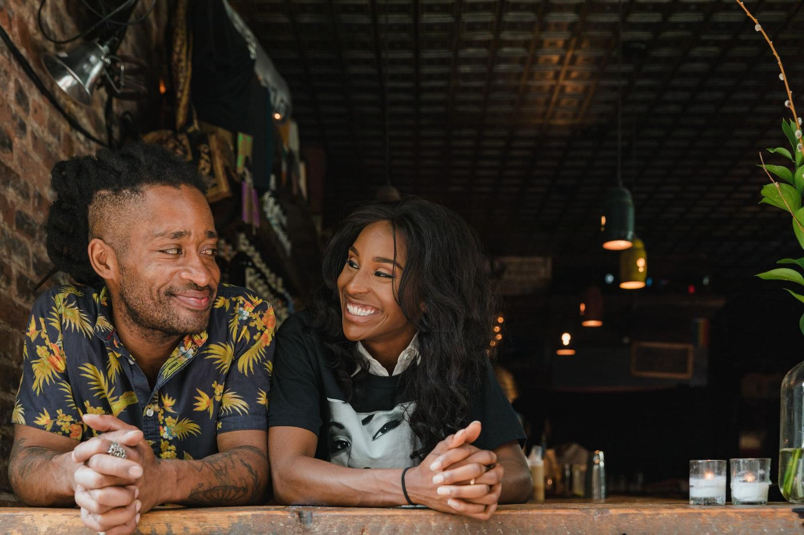
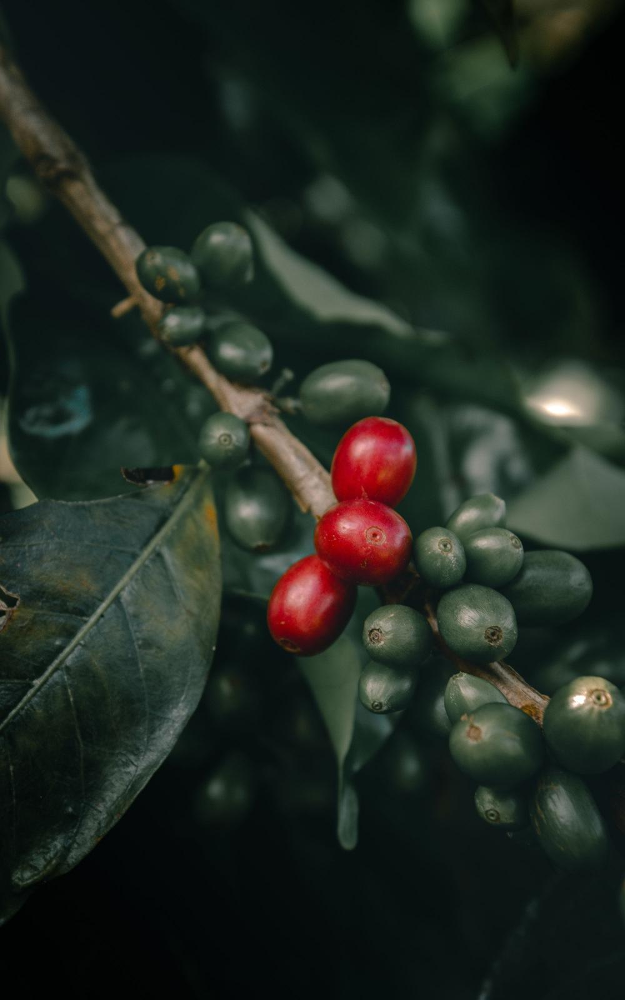
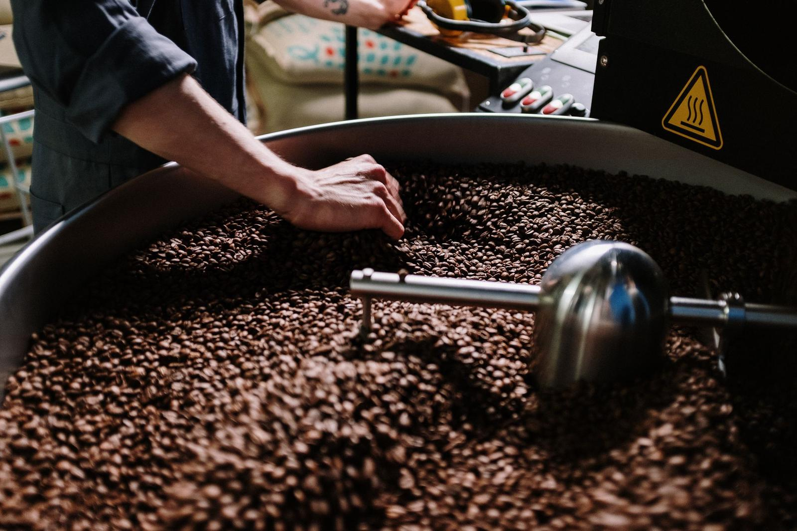
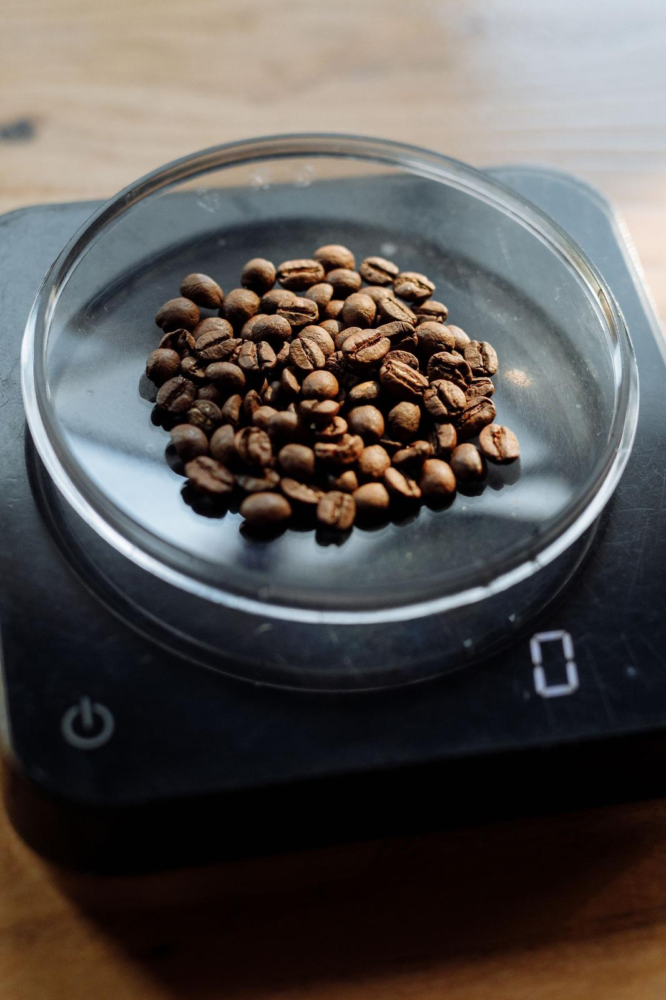
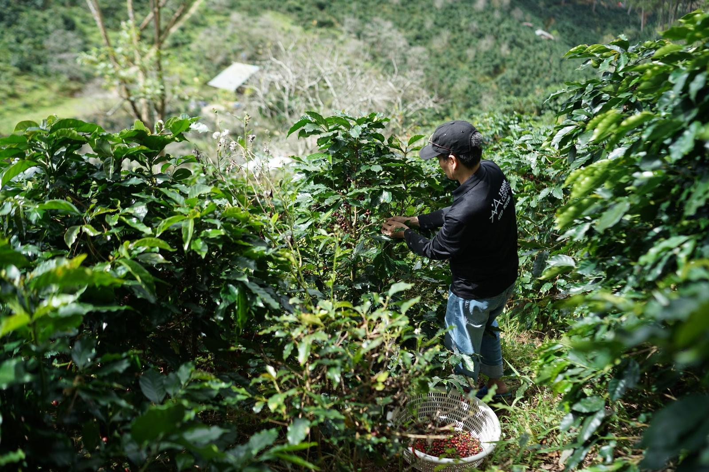
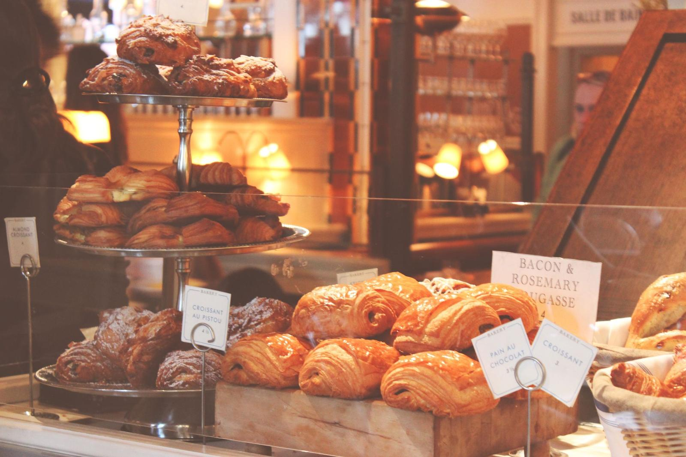
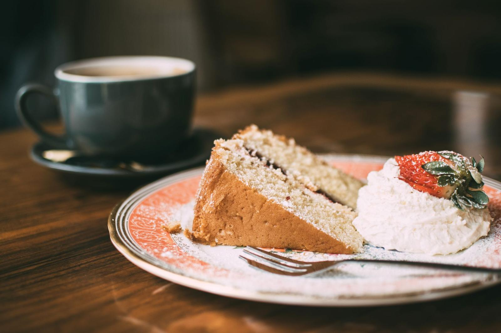

Our story
Silk is Ellie and Marcus, a long table by the window and a coffee machine we saved up for. We opened in 2024 to make the kind of place we wanted to sit in ourselves.

Two of us, one long table
Ellie spent ten years behind other people's counters, from busy station kiosks to a tiny espresso bar where every regular had a name. Marcus is the cook. He learned on brunch shifts and still bakes the buns at six every morning.
We found the old haberdasher's on 14 Sample Street on a wet afternoon. It had big windows, worn floorboards and light that moves across the room all day. We kept the shelves, sanded the floor and called it Silk, after the sign we found in the back room.
How we like it
No laptops at the window table on Saturdays. The music stays low and the menu stays short. We would rather do six things well than twenty things fast.
Sample story and names for this concept site. A real version would be written with the owners.

From the hillside to your cup
Good coffee starts a long way from Anytown. We buy through one roaster we trust, who buys directly from a handful of farms and pays well above the market price. Here is the short version of how a cup gets to you.

The farm
Our house beans come from small farms in Huila, Colombia, and Cerrado Mineiro, Brazil. The cherries are picked by hand when they are ripe, then washed or dried in the sun on the farm.

The roaster
Hollow Lane Roastery roasts in small batches on a ten-kilo drum, twenty minutes away. They roast for us every Tuesday, so the beans on the bar are never more than a week or two old.

The bar
We weigh every dose, taste the espresso every morning and adjust as the day warms up. Milk is from a dairy farm in the county, and the oat is barista grade.
On the grinder now
We change the guest filter every few weeks. Ask at the counter and we will tell you more, or sell you a bag to take home.
- House espressoBrazil Cerrado and Colombia Huila · natural and washedChocolate, hazelnut, brown sugar
- Guest filterEthiopia Guji · washedPeach, jasmine, black tea
- DecafColombia · sugarcane processCaramel, red apple
- Bags to take home250g, whole bean or ground to orderFrom 9.50
Sample roaster, origins and prices for this concept site. Hollow Lane Roastery is a made-up name.



Come in, sit down, stay a while.